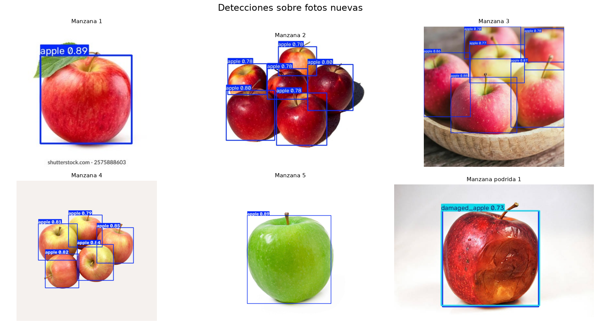
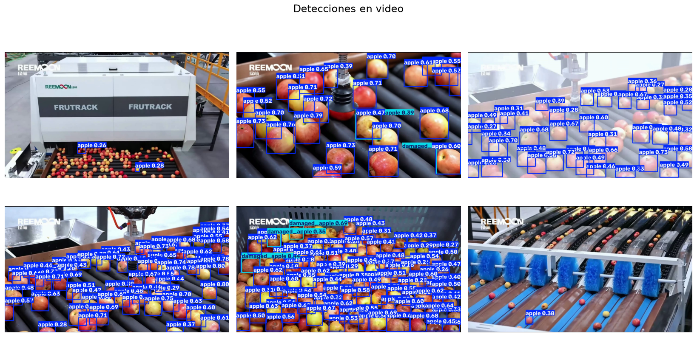
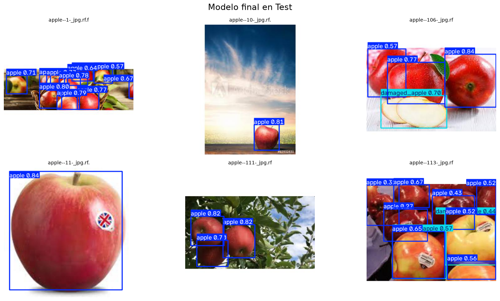

Detector de calidad de manzanas
YOLO26 detecta manzanas en imágenes y video, y las clasifica como apple o damaged_apple.
Fotos nuevas
Cuadros de video

Resultado en Test

Demo en video
Métricas del modelo final
Modelo elegido: fine tuning (seleccionado por mAP50-95 en Validation).
| Conjunto | Precision | Recall | mAP50 | mAP50-95 |
|---|---|---|---|---|
| Validation | 0,774 | 0,746 | 0,804 | 0,540 |
| Test | 0,592 | 0,697 | 0,687 | 0,474 |